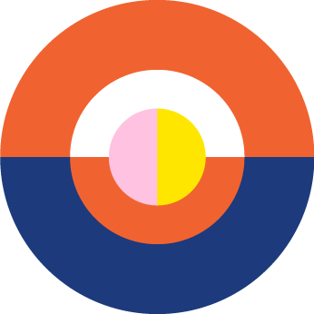

<!-- big cursor -->
<section class="game" game>
  <!-- playing scene -->
  <div class="scene" scene>
    <div class="scene__wrapper">
      <!-- svg scene for masks etc... -->
      <svg class="scene-svg" viewBox="0 0 1036 632" stroke="black">
        <defs>
          <clipPath class="scene-svg__clippath">
            <use xlink:href="#player1" />
            <use xlink:href="#player2" />
          </clipPath>
        </defs>
        <path id="player1" class="cursor" stroke-width="6"></path>
        <path id="player2" class="cursor" stroke-width="6"></path>
        <g class="scene-svg__clippath-ref">
          <image class="scene-svg__image" width="100%" height="100%" preserveAspectRatio="xMidYMid slice" />
        </g>
      </svg>
      <div class="scene__placeholder"></div>
    </div>
  </div>
  <!-- score board -->
  <div class="score">
    <div class="score__recap">
      <div class="color--red t-32--bold">P-1:</div>
      <div class="score__items">
        <!--  -->
      </div>
    </div>
    <div class="score__center">
      <p class="t-32--bold">Item to find:</p>
      
      <p class="score__center__recap color--red t-32--bold">P-1 : 0</p>
      <p class="score__center__recap color--blue t-32--bold">P-2 : 0</p>
    </div>
    <div class="score__recap">
      <div class="color--blue t-32--bold">P-2:</div>
      <div class="score__items">
        <!--  -->
      </div>
    </div>
  </div>
</section>